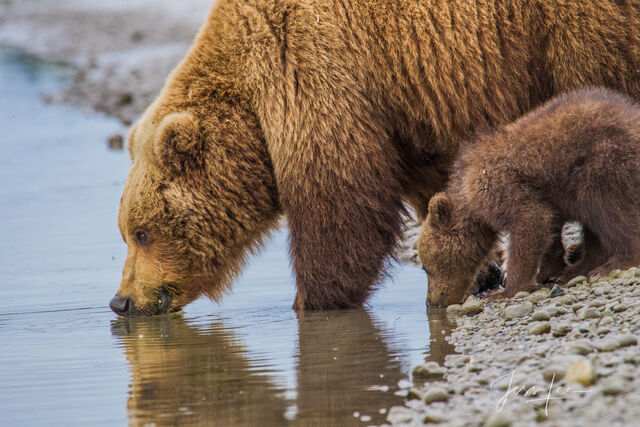

Bear Shola falls is located 2km from the Kodaikanal lake, and 3km away from the bus-stand.The best season to visit is during the monsoons.The fascinated story behind the name of bear shola falls is that was a favourite haunt of a bear who used to drink water frequently hence it is derived as Bear Shola Falls.
The falls dervived its name from the fact that the bears used to come for drinking to this falls. 